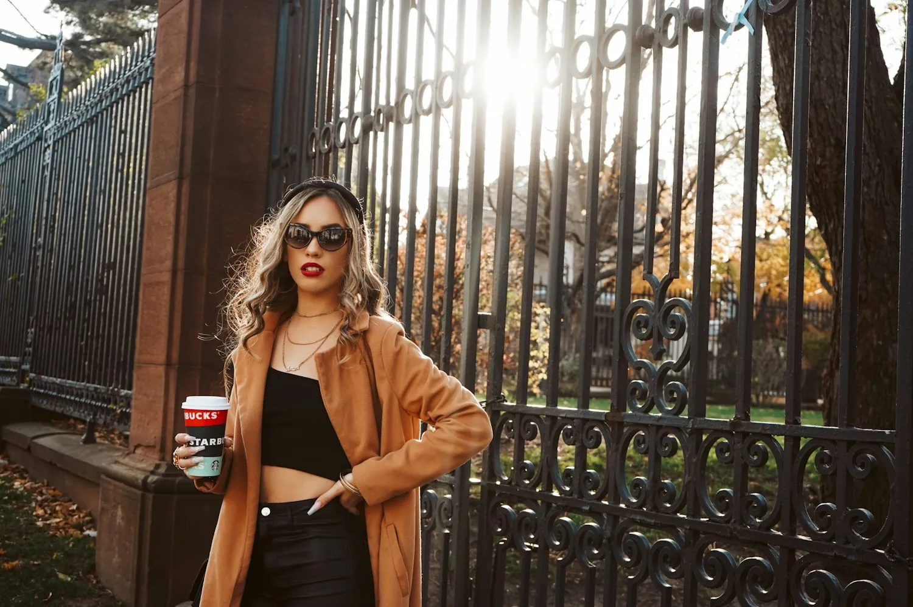
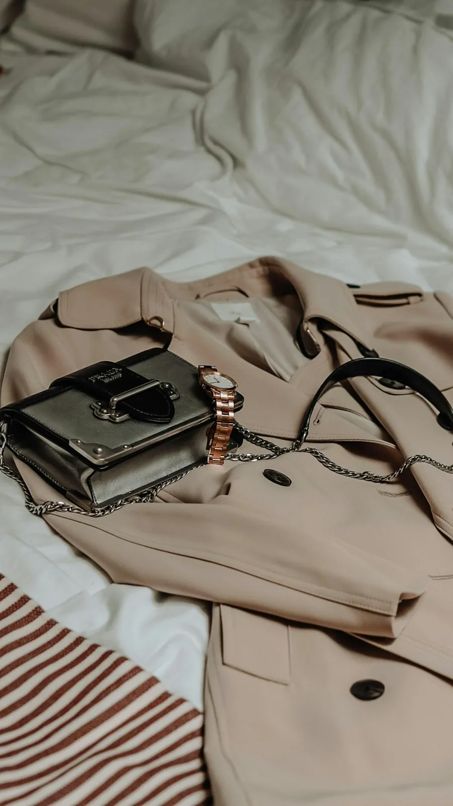
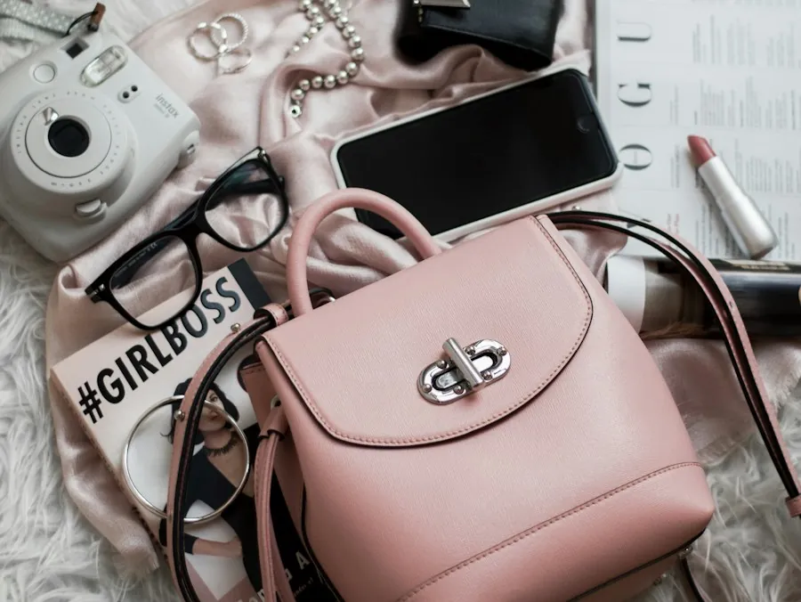
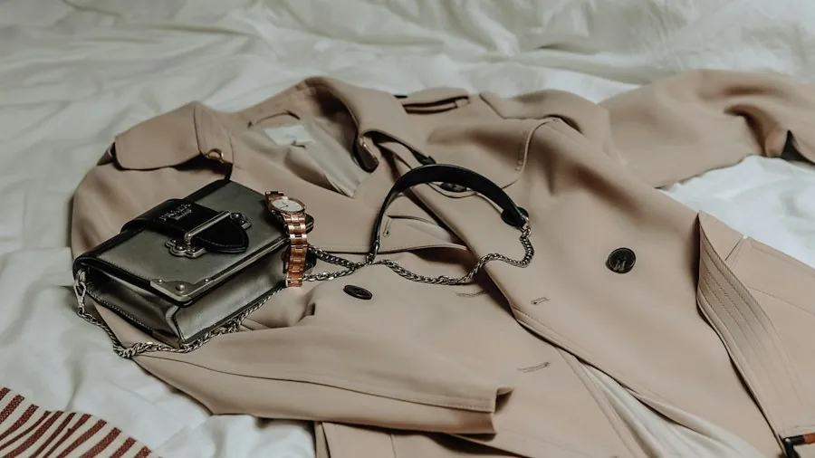
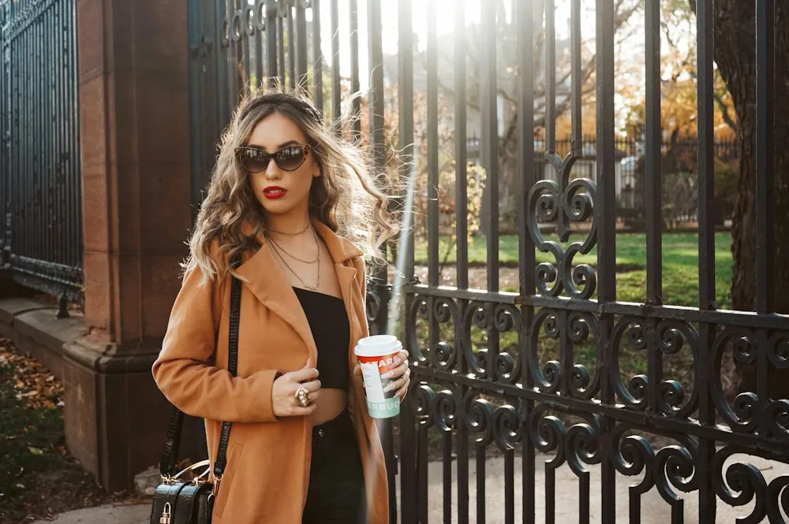

R$ 186 mil
Ateliê Ocre · coleção de inverno
Lookbook com 6 looks em Reel e carrossel. Em 15 dias, a coleção vendeu 72% do estoque pelo link da bio.
Lu Veloso

@luveloso · Curitiba · mídia kit de outubro de 2026
Moda que dá para repetir. Monto 5 looks com 10 peças, mostro onde comprei e quanto custou. Quem me segue compra pela internet e quer acertar na primeira vez.
89% mulheres
25 a 44 anos, 72% do público
Curitiba, São Paulo, Porto Alegre e Florianópolis são as 4 cidades que mais assistem
R$ 280 é o valor médio que elas gastam por compra de roupa



“Comprei a calça que você mostrou e é igualzinha ao vídeo.”
comentário mais repetido nos meus posts
R$ 186 mil
Lookbook com 6 looks em Reel e carrossel. Em 15 dias, a coleção vendeu 72% do estoque pelo link da bio.
3.400
Vídeo “uma bota, 4 jeitos”. 3.400 cupons LU10 usados e a cor caramelo esgotou em 9 dias.
+11 mil
Série de 3 garimpos com peças da loja. O perfil do brechó ganhou 11 mil seguidores no mês.
Escolha um pacote pronto e acrescente o que quiser. O total aparece embaixo.
TotalR$ 0
Pedir propostaPeças enviadas para mim voltam para a marca depois da gravação, a não ser que o contrato diga outra coisa. Entrega em 10 dias úteis.
Respondo em até 2 dias úteis. Para lançamento de coleção, chame com 1 mês de antecedência.
lu@luveloso.com.br
Chamar no WhatsApp